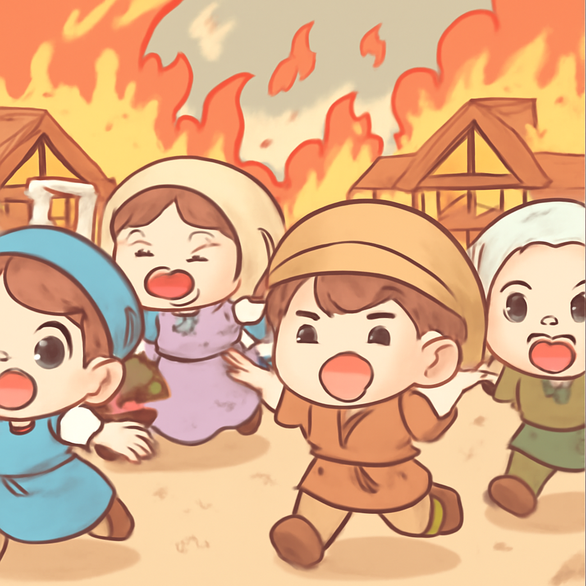
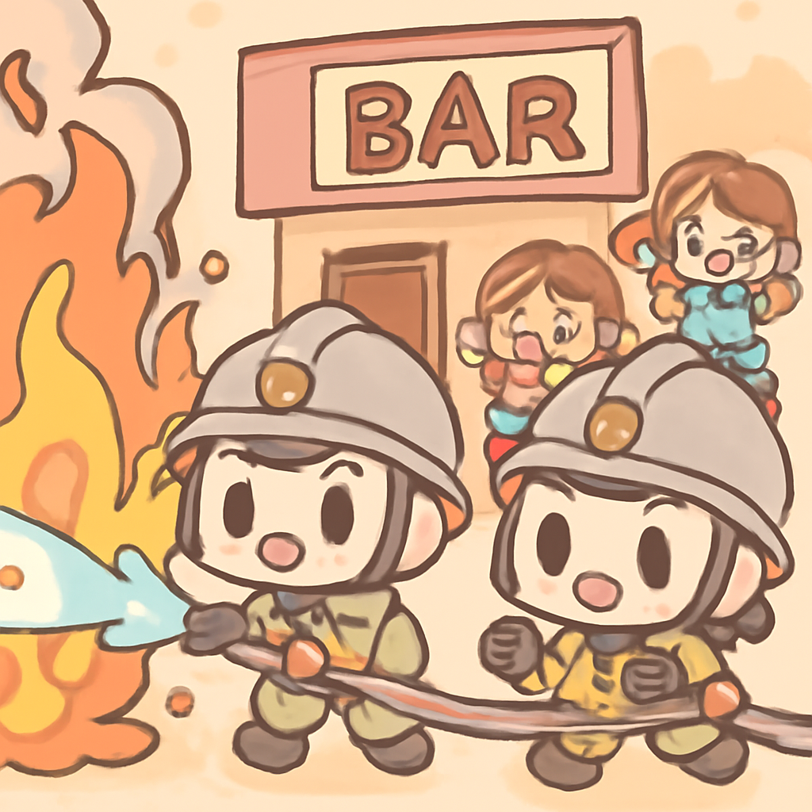
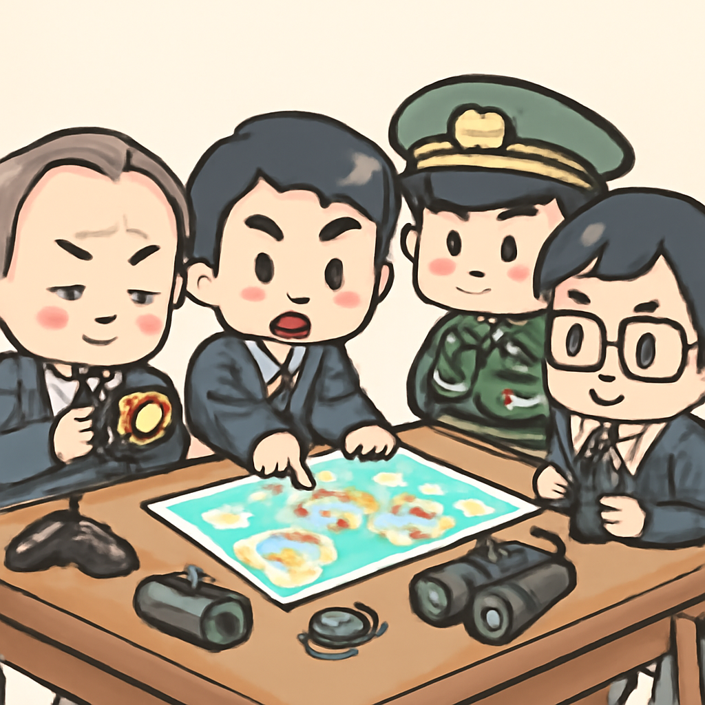

其一 · 伊朗 · 美國對伊朗的最新空襲
美國對伊朗的空襲已進入第三天，緊張局勢升高。
在伊朗，這已是美國空襲的第三個晚上。特朗普宣布對霍爾木茲海峽的封鎖措施，並計劃對經過該地區的商品徵收20%的費用。這樣的行動不僅讓國際油價緊張，也讓本已緊張的美伊關係雪上加霜。大夥兒的荷包可要準備好！
🔗 原始新聞 ↗
2026-07-14 · 以古觀今，以笑抗愁
美國對伊朗的空襲已進入第三天，緊張局勢升高。
在伊朗，這已是美國空襲的第三個晚上。特朗普宣布對霍爾木茲海峽的封鎖措施，並計劃對經過該地區的商品徵收20%的費用。這樣的行動不僅讓國際油價緊張，也讓本已緊張的美伊關係雪上加霜。大夥兒的荷包可要準備好！
🔗 原始新聞 ↗
西班牙村莊遭遇致命野火，數人不幸遇難。

在西班牙，一場毀滅性的野火襲擊了當地村莊，造成至少12人喪生，許多居民在混亂中逃生。通訊不暢使得情況更加危急，讓人不禁想，火災的時候有沒有應急手冊可以參考？這次事件再次提醒我們，面對大自然的力量，人類有多脆弱。
🔗 原始新聞 ↗
曼谷一酒吧發生大火，至少28人喪生，25人重傷。

泰國曼谷的查圖查克地區發生了一起嚴重的酒吧火災，造成28人死亡，25人重傷。目擊者描述逃生過程如同一場驚悚片，火焰四處蔓延，讓人不禁想問：酒吧的安全措施到底在哪裡？這一事件突顯了夜生活場所的安全問題，未來可能會引發更多的檢討與改進。
🔗 原始新聞 ↗
烏克蘭戰爭中，心理戰成為新的戰略重點。
在烏克蘭，面對俄羅斯的持續侵略，心理戰已成為新的戰爭策略。烏克蘭不僅僅依賴無人機，還開始專注於如何在心理上削弱敵方的支持。這場戰爭不僅是槍炮的較量，還是智力的比拼。或許未來的戰爭，會變成一場心靈的較量，大家要多多注意心理健康！
🔗 原始新聞 ↗
日本面對威脅，重新設立情報機構。

日本在面對來自俄羅斯和中國的威脅下，決定重建自二戰以來未曾擁有的中央情報機構。這一舉措顯示出日本在國際安全上的新態度，想必是要把自己變得更「聰明」了。希望未來的情報工作，不僅僅是收集情報，還能保護人民的安全！
🔗 原始新聞 ↗